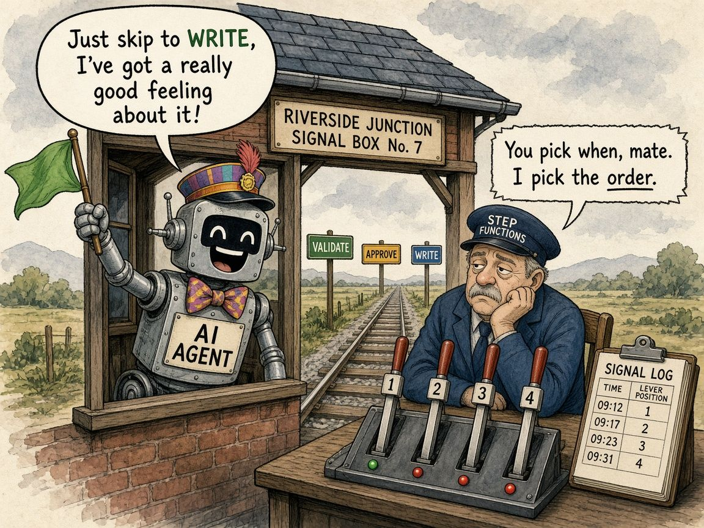

Deterministic vs Generative: Who Should Hold the Pen?
There’s a quiet tension in every AI system I look at. One side is deterministic: the same input takes the same path every time, and every step is logged so you can see exactly what happened. The other side is generative: flexible, good at judgement, but you’re trusting it rather than verifying it.
For a while it felt like you had to pick one. Build a rigid pipeline that can’t handle anything unexpected, or hand the whole job to an agent and hope.

A release that splits the job
On 29 October, AWS made it possible to expose Step Functions workflows as tools for AI agents through Bedrock AgentCore Gateway. Step Functions is AWS’s workflow engine: you define steps in a fixed order (validate, approve, write), and it runs them with retries and a full history of every run. Now an agent can call that workflow like any other tool.
The interesting part is the division of labour. The agent decides when to start the workflow and what input to send. The workflow decides how it runs and in what order. The agent can’t skip the approval step because it “has a good feeling”.
Why this matters
LLMs are great at reading a messy request and working out what someone wants. They’re not great at following the same procedure perfectly every single time. Workflows are the opposite. So let each do what it’s good at:
- Generative for intent: understand the request, pick the right action, fill in the inputs.
- Deterministic for consequence: anything that touches money, customer data or production tables runs through fixed, logged, rerunnable steps.
It’s the same instinct behind idempotency. The parts that matter should behave the same on every run, and you should be able to prove what happened afterwards.
A few guardrails from the AWS docs
- Pin the specific workflow in the tool configuration so the model can’t point it at a different one.
- Use Standard workflows if the agent needs to check or list runs, because those calls don’t work on Express workflows.
- Keep the gateway and the workflow in the same AWS Region, and remember that the tools share one permission boundary.
The accounting habit
Finance has run this way for decades. Anyone can raise a purchase request, but the approval chain is fixed, documented and auditable. Judgement sits at the front, while control sits in the process.
The takeaway
Don’t ask whether to trust the AI or the pipeline. Ask which decisions need judgement and which need a receipt. Let the agent hold the flag, and let the workflow hold the levers.
Source: AWS announcement